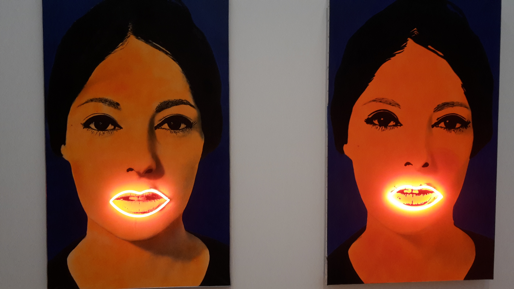
All images in this project are generated using deep neural networks, starting from a textual description. The pipeline used is a combination of VQGAN and OpenAI's CLIP, which together can transform text prompts into visually striking images.
The generation process involves:
This approach allows for artistic exploration at the intersection of human creativity and machine learning. By carefully crafting prompts and guiding the generation process, we can achieve images with unique aesthetics that wouldn't be possible with traditional artistic methods.
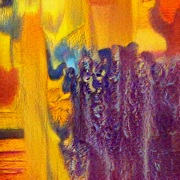
The Fabric of Art
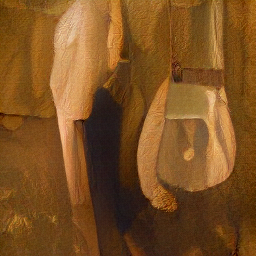
Fabric of Art II
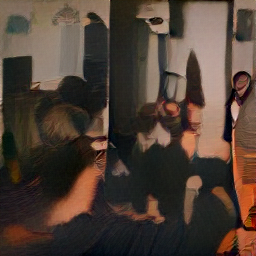
Factory of Art
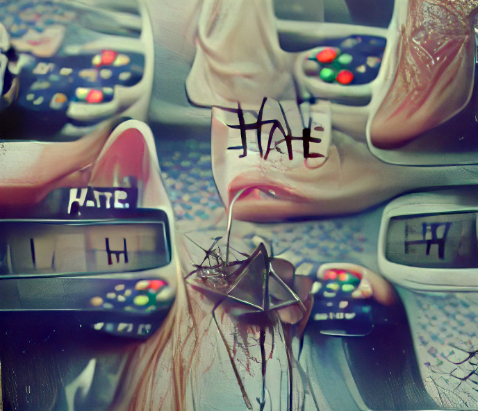
Emotion
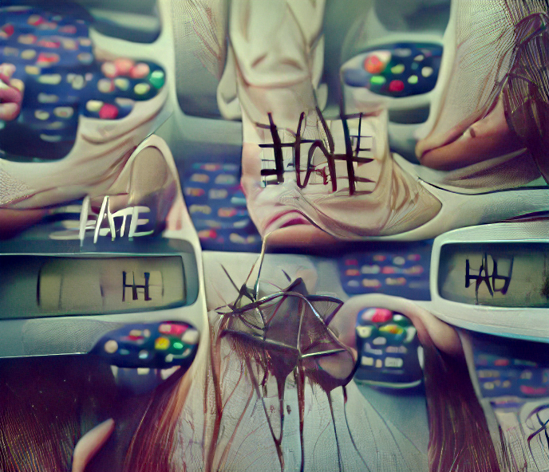
Emotion II
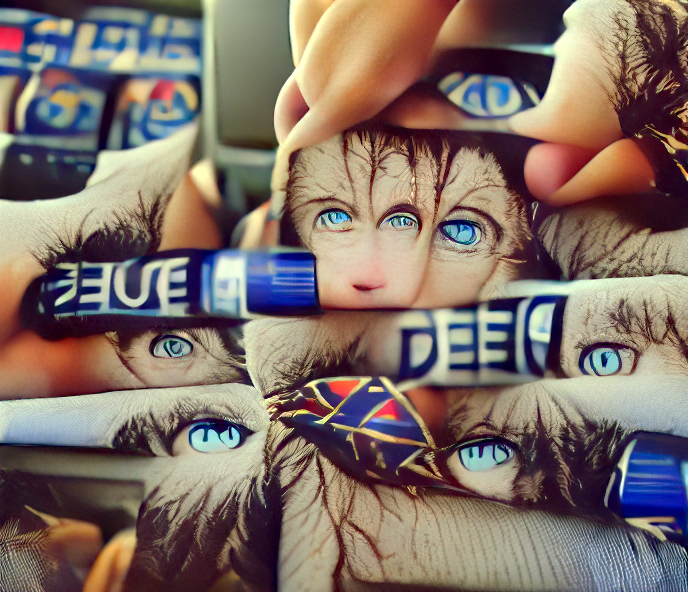
Deep Blue Eyes
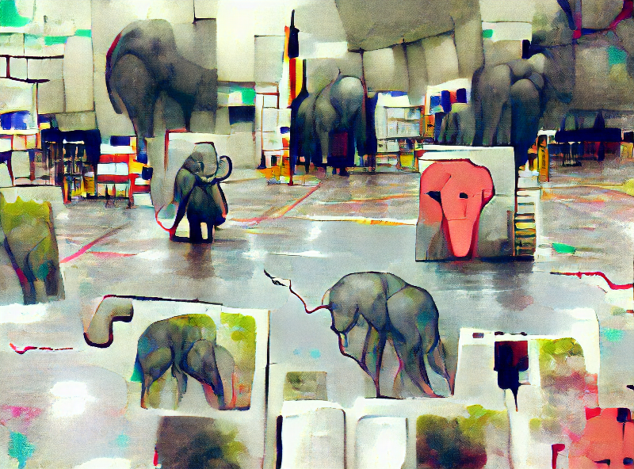
Elephant Dreams
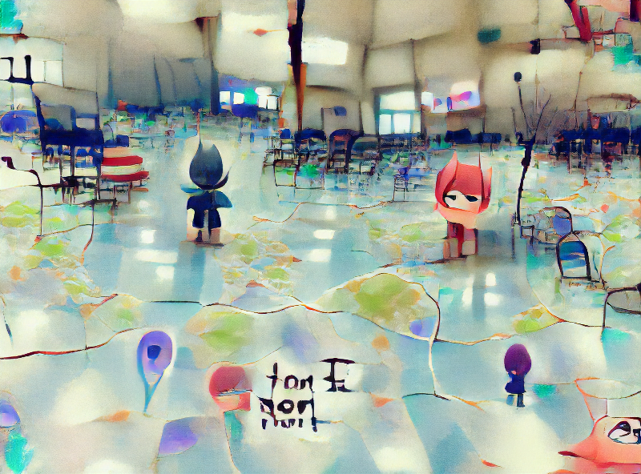
I'm Not Here
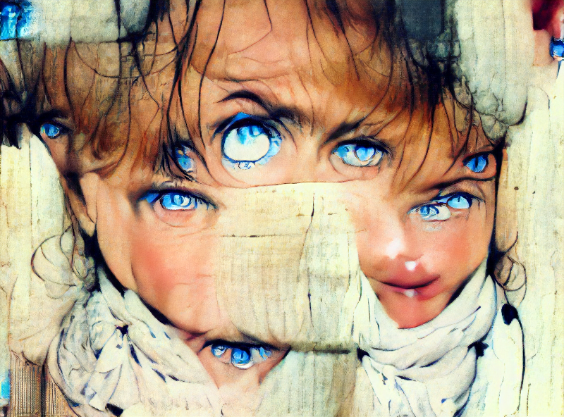
Blue Eyed Francaisette
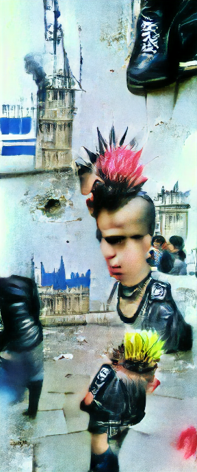
London Punk
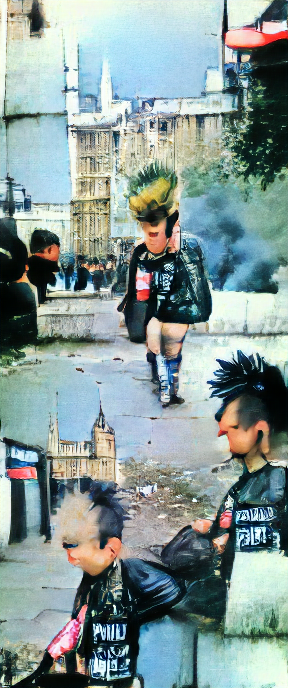
London Punk II
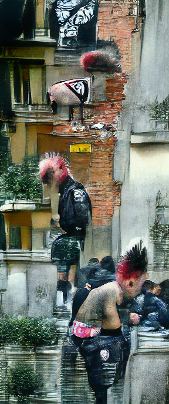
Milan Punk
VQGAN (Vector Quantized Generative Adversarial Network): A type of GAN that learns to compress and reconstruct images through a discrete codebook of visual components.
CLIP (Contrastive Language-Image Pre-Training): A neural network trained on a variety of image-text pairs, which can understand both images and natural language descriptions.
The combination of these two models allows us to generate images that are guided by text prompts, creating a new form of human-AI collaborative art creation.